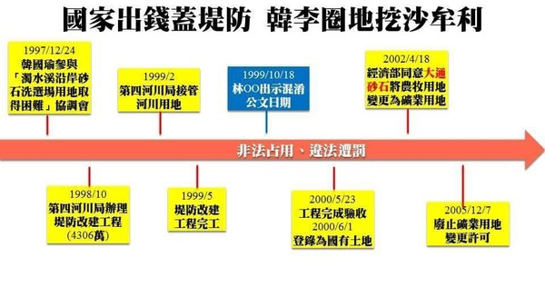

黃國昌爆徐享崑遭通緝趴趴走地方人士訝異：真的嗎？

台水前董事長徐享崑涉貪污被通緝落網中檢凌晨發監
2019-12-02 09:38聯合報 記者白錫鏗／台中即時報導 徐享崑(左二)11月下旬與大陸企業人士參訪公館農會。圖／擷自韓鴻恩臉書 台灣自來水公司前董事長徐享崑涉貪污弊案，14年前收受金棠科技公司老闆葉信村賄款500萬元，被判刑8年定讞，卻未入監服刑，去年3月被台中地檢署發布通緝，昨被苗栗警方在新北市中和地區查獲，昨晚解送台中地檢署歸案，執行科檢察官今天凌晨將徐享崑發監。 台中地檢署副發言人主任檢察官劉志文表示，徐享崑先前擔任前經濟部水資源局長、國民大會代表、及國際灌溉排水協會中華民國國家委員會主席，於民國88年及89年間，分別參加在西班牙及荷蘭，所舉行的國際灌排年會及水資源論壇部長級會議。 兩次出國費用皆由國際灌排協會支付， 但徐享崑明知出國旅費已由國際灌排協會支付，不得重複再向國民大會請領，他分別向國民大會詐領差旅費24萬餘元，被依貪污罪判刑7年2定確定，這一部分已服完刑。 此外，徐享崑在擔任自來水公司董事長期間， 於14年前接受金棠科技公司老闆葉信村及協理黃百祿邀宴，收受葉交付的500萬賄款，葉要求讓兩度測試運轉不合格的「拷潭及翁公園淨水場設備工程」給予再測試的機會，結果在第三次測試運轉成功，徐享崑被判刑8年定讞。 中檢表示，徐享崑收賄500萬元，於2017年10月19日判刑8年定讞，與前案被判刑7年2月，去年1月16日合併定刑為15年，其中徐已服刑7年2月，尚須再服刑7年10月。因徐未到案執行，台中地檢署執行科於去年3月12日對徐發布通緝。 苗栗警方昨天循線在北部新北市中和區查獲徐享崑，昨晚將他解送台中地檢署歸案，執行科檢察官確認身分後，今天凌晨將徐發監執行。 台灣省自來水公司前董事長徐享崑（中）涉兩件貪汙案，苗栗警察分局專案小組昨天逮捕他。 記者范榮達／攝影

黃國昌提砂石案關鍵4問題 韓國瑜提告「意圖使人不當選」
▲韓國瑜、黃國昌。（合成圖／ETtoday攝影中心攝、記者屠惠剛攝） 記者袁茵、呂欣玫／綜合報導 立委黃國昌11月28日晚間指控李佳芬父親李日貴的大通砂石行1998年在行水區盜採砂石，並由時任立委的國民黨總統候選人韓國瑜關說、協調，引發外界關注，其中被他視為「砂石案關鍵人」的經濟部水資源局長徐享崑，也在1日晚間被逮捕，使砂石案事件延燒擴大。
▲黃國昌爆李佳芬家族濫權盜採砂石。（圖／翻攝自臉書） ●11月28日 黃國昌爆料砂石案 黃國昌11月28日晚間在臉書上預告「特權掠奪國家資源、韓李家族發大財」，直指自己接獲檢舉，韓國瑜夫人李佳芬家族，1990年代在韓國瑜擔任立法委員期間，透過濫權手段將「河川地」硬改為「浮覆地」，滿足李家採砂牟利的需求。 當晚韓國瑜競辦提出3點回應，李佳芬父親李日貴過去經營之砂石公司，時序早在韓國瑜認識李佳芬之前，韓國瑜未曾參與，更絕無利用立委職權做任何不法或特權施壓之事，呼籲選舉不應針對候選人家人進行無差別的攻擊。 ▲黃國昌爆料記者會。（圖／記者屠惠剛攝）
●11月29日 黃國昌開記者會、韓辦發5點聲明 事隔一天，黃國昌召開記者會詳細說明砂石案，希望韓國瑜和李佳芬出面說明。但韓國瑜當天下午選擇迴避此問題，認為自認很多事情都依法，但身為總統候選人不方便講太多，所以讓發言系統來發言；而李佳芬則在晚間以氣喘為由，取消原訂要參加的彰化造勢活動。 雖然韓國瑜、李佳芬都未出面回應，但韓國瑜競選辦公室仍在11月29日晚間8點發出5點聲明，強調一切依正常程序公開協調，絕無不法，亦無圖利特定業者，盼選舉回歸政策辯論基本面，就治國方針進行良性競爭，而非針對候選人家人進行無差別的攻擊，或是討論三十年前舊事、冷飯熱炒。 針對韓國瑜競辦的聲明，黃國昌馬上在臉書上批評「可笑」，「有膽就站出來吧！面對面、攤開資料、公開辯論！」 ▲黃國昌爆料徐享崑貪污沒有關到死，還囂張趴趴走。（圖／翻攝黃國昌臉書）
●11月30日 黃國昌召開二次記者會、爆砂石案關鍵人徐享崑、韓國瑜發毒誓 砂石案延燒到11月30日早上，韓國瑜發下毒誓，「當選後我若貪污，放棄假釋把我關到死！」黃國昌則是在當天下午召開記者會，批評韓國瑜競選辦公室11月29日的5點聲明模糊焦點，質疑對方「是不是有文字閱讀障礙」、「1999到2002年的砂石地是否為合法占有？」 到了晚上，黃國昌再爆出「砂石案關鍵人」，也就是當時辦理堤防工程的經濟部水資源局長徐享崑，痛批徐享崑在擔任國大代表與自來水公司董事長期間，涉及多起貪污案件，分別在2007年判刑7年2月、2017年判刑8年確定，然而現在卻到處趴趴走，離譜至極！若真的有心，與其發什麼「貪污就關到死」的誓，不如趕快完成相關修法改革，才是正辦。
●12月1日 韓辦揚言告黃國昌、黃國昌召開第三次記者會、徐享崑被捕 黃國昌緊咬砂石案不放的行為，使韓國瑜競選辦公室法律顧問葉慶元在12月1日表示，黃國昌把政府輔導砂石業者合法化的過程曲解，已涉及違反選罷法意圖使人不當選，若不公開澄清，否則不排除照選罷法規定，提出告訴。 關於韓辦揚言提告，黃國昌同天中午臨時開記者會回應，請韓國瑜勇敢面對，別再躲在律師背後放煙霧彈。第一，他於11月28日晚上就在臉書發文說明此案背景，但遺憾韓國瑜法律顧問卻刻意將「聯管計畫」與「濫用國家資源蓋新堤防為自家砂石場圈地牟取私利」混為一談，企圖移轉焦點。 黃國昌指出，事實上新堤防所圈出的地，就是由李佳芬家族違法占用開發為砂石場，事證如此明確，韓國瑜迄今不敢誠實面對，企圖放出煙霧彈模糊焦點，十分可笑。 黃國昌表示，第二，韓國瑜的顧問聲稱「占有是永遠不可能合法的概念」，顯然是在汙辱公民社會的智商。一般法律系的學生都能分辨「有權占有」與「無權占有」，「非法占有」與「合法占有」之不同。韓辦顧問為了幫韓國瑜遮掩，竟然掰出如此欠缺基本常識的託詞，著實令人遺憾。「請問韓國瑜辦公室，如果不是非法占用堆置砂石，當初怎麼會數度遭到裁罰？」 砂石案延燒至此，韓國瑜走訪行程時終於正面回應，認為發言人系統講得很清楚，希望黃國昌有疑慮的話，趕快去檢舉，如果對方不檢舉，那就不排除提告意圖使人不當選，「我能感覺到這兩天，黃國昌他自己前後的話兜不攏。」 就在韓國瑜回應砂石案沒幾個小時，被黃國昌指控「到處趴趴走」的徐享崑，就被苗栗警方在台北木柵區查獲；而徐享崑被捕時還反問警方說，「案件不是還在上訴中嗎？」、「我心裡坦蕩蕩」。 ▼黃國昌痛批韓國瑜李佳芬濫用國家資源圈地牟私利。（圖／翻攝黃國昌臉書）
●12月2日 黃國昌提4大關鍵問題、韓國瑜提告「意圖使人不當選」 黃國昌2日在財政委員會質詢時提到，已經證實2000年新提防圈出的地在登記為國有財產後，遭李佳芬家族長期非法占有，認為「李家擺明想將圈地變為私有」。 黃國昌提出4大關鍵問題，第一，為何縱容李家長期非法占有國有土地牟取私利？第二，為何總是配合李家的用地需求，不斷變更地目？第三，李家擺明想將圈地變為私有，這其中是誰在幫忙撐腰？第四，2010年通過的開發計畫，在2014年就遭到廢止，為何到2019年才終止契約、要求返還土地？ 針對黃國昌的質疑，韓國瑜表示，在選舉還有40天要投票的時候，拿2、30年前這些事情，而且完完全全禁不起考驗，來抹黑跟攻擊，意圖影響選票。韓國瑜要黃國昌「當一個勇敢的立法委員」，既然拿出了證據就來趕快去告，並重申：「如果你不去告，對不起，韓國瑜準備告你黃國昌，因為你很明顯拿不出證據，意圖使人不當選，變成我要告你。」 ▲黃國昌「韓李家族蓋堤圈地掠奪國有資源大事記」。（圖／翻攝自黃國昌臉書）

黃國昌爆徐享崑遭通緝趴趴走地方人士訝異：真的嗎？
2019-11-30 18:50聯合報 記者胡蓬生、劉星君／苗栗即時報導 立委黃國昌今天在臉書貼文「貪汙沒有關到死、還在囂張趴趴走」，揭露曾任國大代表、經濟部水資源局長及自來水公司董事長的徐享崑，去年3月被台中地檢發布通緝，但到現在還在趴趴走，上周更與苗栗縣政府官員接待中國參訪團，黃國昌痛批此事「離譜至極」。 苗栗警方下午接獲媒體詢問，查證後確認徐享崑遭台中地檢通緝，警方強調徐雖設籍在苗栗縣公館鄉，但平日鮮少在苗栗地區出現，多在北部活動，未來警方會加強布線追查。 黃國昌在臉書po文說，國民黨的徐享崑在擔任國大代表與自來水公司董事長期間涉及多起貪汙案件，分別在2007年判刑7年2月、2017年判刑8年確定；針對第2個貪汙罪，徐享崑根本未入監服刑，雖然去年3月已經發布通緝，到現在還到處趴趴走，上周更與苗栗縣府官員高調接待中國參訪團，離譜至極。 黃國昌說，過去幾年，他不斷針對權貴犯罪與權貴司法提出批判，就是看不下去有權有勢的貪腐政客，囂張橫行；判刑確定有的在外趴趴走、有的直接棄保潛逃；即使入監也是去外役監坐爽牢、還能早早假釋。也正因為如此，他積極提出修正草案，推動「妨礙司法公正罪」、「不法關說罪」、「棄保潛逃罪」、「嚴格化貪污犯外役監條件」、「提高貪污犯假釋門檻」等改革，令人遺憾的是，猶如狗吠火車，兩大黨充耳不聞。 黃國昌po出的圖片在公館鄉農會旅服中心前拍攝，除了二、三名大陸參訪人士，還有徐享崑、縣府參議許滿顯及公館鄉農會總幹事韓鴻恩，圖片來源應是取自韓鴻恩的臉書。 針對黃國昌的po文，苗栗縣政府參議許滿顯表示，他根本不知道徐是通緝犯，當天只是基於縣府立場陪同農會人員接待大陸參訪團，對立委黃國昌臉書PO文，他不予回應。 「是通緝犯！真的嗎，不是已服過刑了？」韓鴻恩對媒體詢問也相當訝異，表示當天是臨時接獲有大陸人士要來參訪，公館農會一向歡迎各地團體來參訪，徐享崑和大陸幾家公司老闆臨時到農會參訪，他就地在一樓展售中心簡報，其實當天還有國內農會數十人的團體在樓上就位等候參訪，他真的不知道徐享崑仍被通緝中。 立委黃國昌在臉書po文揭露自來水公司前董事長徐享崑(左二)去年遭通緝，上周仍陪同大陸參訪團到公館農會「趴趴走」。圖／擷取自黃國昌臉書